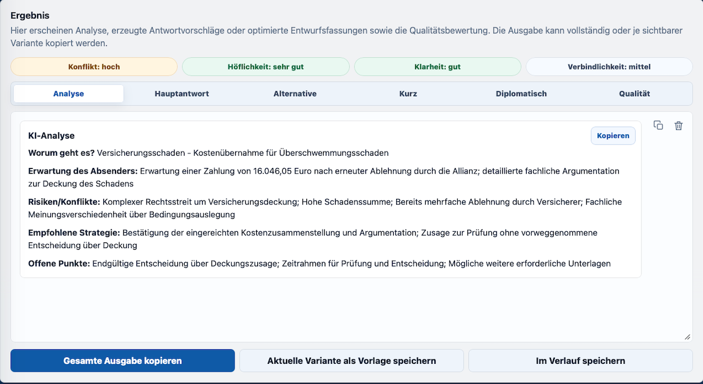

Nachricht & Unterlagen einordnen
Betreff, Nachricht, PDF-Inhalte, Ziel und eigene Hinweise werden in einem klaren Vorgang zusammengeführt.
Browserbasierte Oberfläche mit lokaler Verarbeitung
Strukturierte KI-Antworten für E-Mails, Briefe, PDFs und Fachkorrespondenz
Formuliere professionelle Antworten schneller, kontrollierter und stilistisch passend. Steuerbar nach Antworttyp, Fokus, Ton, Sprache, Länge und Stilprofil. Auch aus PDF-Unterlagen und gescannten Seiten mit lokaler OCR-Unterstützung über die App-Umgebung.
Nutzen
Betreff, Nachricht, PDF-Inhalte, Ziel und eigene Hinweise werden in einem klaren Vorgang zusammengeführt.
Antworttyp, Fokus, Tonalität, Grundstil, Länge und Sprache werden vor der Erstellung festgelegt.
Hauptantwort, Kurzfassung, Alternative und diplomatische Version stehen direkt zur Weiterverarbeitung bereit.
Die App im Einsatz
Links Navigation, mittig der Composer, rechts die Antwortparameter. SMART ReplySuite ist auf schnelle Orientierung, PDF-Verarbeitung und wiederholbare Büroarbeit ausgelegt.
Direkt zur Arbeitsoberfläche
Antwortparameter
KI-Analyse
SMART ReplySuite ist nicht nur Textgenerator. Die App ordnet eingehende Kommunikation ein, erkennt sensible Punkte und leitet daraus eine passende Antwortstrategie ab.
So entstehen Entwürfe, die Ziel, Ton, Risiko und nächste Schritte berücksichtigen.
Ergebnis & Bewertung
Nach der Analyse stellt SMART ReplySuite die Ausgabe getrennt dar: Analyse, Hauptantwort, Alternative, Kurzfassung, diplomatische Version und Qualitätsbewertung. So bleibt nachvollziehbar, warum eine Antwort passt und wie verbindlich sie formuliert ist.

Professionelle Schutzregeln
Antworten können zurückhaltend formuliert werden, wenn Freigaben, Fakten oder Zuständigkeiten noch fehlen.
Die App hilft, Schuldeingeständnisse, Kostenübernahmen oder Anerkennung von Ansprüchen sprachlich zu vermeiden.
Sensible Nachrichten lassen sich freundlich, sachlich und verbindlich beantworten, ohne unnötig zu eskalieren.
Abgrenzung zu Chatbots
Statt jedes Mal neu zu prompten, arbeitest du mit Betreff, Ziel, Parametern, Stilprofilen, Vorlagen und Ergebnisvarianten. Quelle, Steuerung und Antwort bleiben sauber getrennt.
Workflow
Nachricht, Brief oder Schreiben mit Betreff und Antwortziel erfassen.
Strategie, Ton, Fokus, Länge, Sprache und Stilprofil festlegen.
Die KI erzeugt Antwortvorschläge und ordnet Klarheit, Konflikt und Ton ein.
Passende Variante kopieren, speichern oder als Vorlage weiterverwenden.
Zielgruppe
Kundenanfragen, Rückfragen, Angebote und Abstimmungen schneller beantworten.
Fristen, Zuständigkeiten, Nachträge und Beschwerden sauber formulieren.
Wiederkehrende Korrespondenz mit einheitlichem Stil vorbereiten.
Reklamationen, Nachfragen und erklärungsbedürftige Anliegen professionell beantworten.
Projektkommunikation, Kundenservice, interne Korrespondenz, private Korrespondenz und Management-Antworten.
Bau- und Vertragskontext, Immobilienwirtschaft, technische Büros, Beratung, Verwaltung und B2B-Kommunikation.
Datenschutz & Kontrolle
SMART ReplySuite speichert Vorlagen, Verlauf und Stilprofile lokal. KI-Anfragen laufen bewusst über deinen eigenen Anthropic API-Key und den lokalen Proxy.
Lizenzmodell
Für Anwender, die E-Mails, Briefe und wiederkehrende Geschäftskommunikation regelmäßig mit KI vorbereiten und dabei lokale Arbeitsdaten, Stilprofile und Vorlagen sauber nutzen möchten.
Pro Lizenz ist ein persönlicher Nutzerzugriff vorgesehen. Mehrere Lizenzen bedeuten mehrere getrennte Nutzerzugriffe, keinen gemeinsamen Cloud-Arbeitsbereich.
236,81 € inkl. MwSt.
Entspricht 16,58 € netto / 19,73 € brutto pro Monat
Jahreslizenz | sichere Zahlung | persönlicher Nutzerzugriff
FAQ
SMART ReplySuite hilft dir, E-Mails, Briefe und wiederkehrende Korrespondenz schneller, strukturierter und kontrollierter zu beantworten. Die App verbindet Analyse, Antwortparameter, Stilprofile, Vorlagen und mehrere Antwortvarianten, damit du nicht jedes Mal frei prompten musst und trotzdem professionelle, nachvollziehbare Entwürfe erhältst.
Besonders geeignet ist SMART ReplySuite für Kundenanfragen, Beschwerden, Nachfass-E-Mails, Terminabstimmungen, Projektkommunikation, Angebots- und Vertragsrückfragen sowie sensible Schreiben, bei denen Ton, Klarheit und Verbindlichkeit wichtig sind.
Ja. Text-PDFs werden direkt ausgelesen. Wenn ein PDF kaum verwertbaren Text enthält, kann die lokale App-Umgebung gescannte Seiten per OCR auslesen und daraus den Kontext für Analyse und Antwortvorschläge vorbereiten.
Die App erstellt eine Hauptantwort sowie ergänzende Varianten wie Kurzfassung, Alternative und diplomatische Version. Zusätzlich werden Analyse und Qualitätsbewertung getrennt angezeigt, damit du die Antwort besser prüfen und gezielt weiterverwenden kannst.
Die App wird nach dem Download über den mitgelieferten Starter geöffnet. Sie läuft lokal auf deinem Gerät und wird anschließend im Browser angezeigt.
Ja. Die App kann auf Windows und macOS lokal im Browser genutzt werden. Dafür gibt es passende Starter für das jeweilige System.
Nein. Deine Inhalte werden lokal auf deinem Gerät bzw. im lokalen Browser-Speicher gespeichert. Es gibt keine automatische zentrale Cloud-Datenbank und keine automatische Synchronisierung zwischen Nutzern.
Ja. Du kannst deine lokalen Arbeitsdaten als JSON exportieren und später wieder importieren, z. B. zur Sicherung oder zur Übertragung auf ein anderes Gerät.
Ja. Die App unterstützt beim Analysieren eingehender Nachrichten und beim Erstellen professioneller Antwortvarianten. Für KI-Funktionen wird ein eigener API-Key benötigt.
Die KI-Funktionen laufen über die Anthropic API. Dafür wird ein eigener Anthropic API-Key benötigt. Ein normales Claude-Abo, z. B. Claude Pro, ist dafür nicht ausreichend. Für API-Nutzung können zusätzliche Kosten nach Anthropic-Abrechnung entstehen. Inhalte werden nur für die jeweilige KI-Anfrage an den Anbieter übertragen.
Ja, sofern dieses Modell aktiviert ist. Die App kann dann für einen begrenzten Zeitraum mit vollem Funktionsumfang getestet werden.
Für Testphase, Kauf und Lizenzprüfung kann ein Nutzerkonto erforderlich sein. Die gespeicherten Inhalte der App bleiben davon getrennt lokal auf deinem Gerät.
Du erhältst eine Jahreslizenz für 12 Monate. Sie verlängert sich automatisch um weitere 12 Monate, sofern sie nicht spätestens 1 Monat vor Ablauf gekündigt wird.
Vorbestellung
Der Kaufbereich wird derzeit vorbereitet. Bei Interesse kannst du eine Vorbestellung vormerken lassen.
Sobald Testphase, Zahlung und Lizenzfreischaltung aktiv sind, führt der Kaufbutton direkt zur sicheren Online-Bestellung.